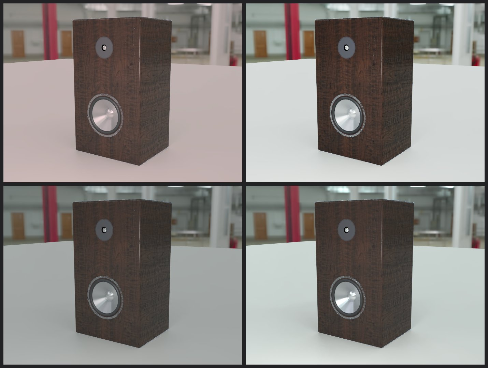
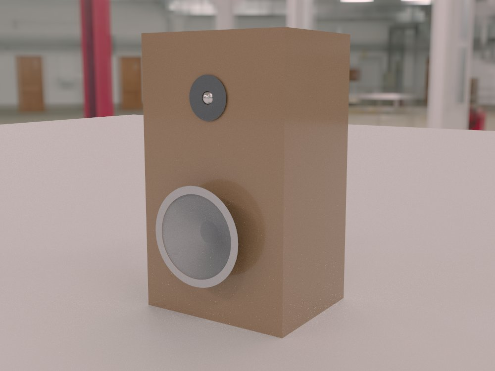

SDS : Speaker Design Suite
All the Tools, Products, Tests, and Visualized Process to Build Your Own Speaker
Our Speaker Design Suite, powered by our own WRKS engine, allows anyone – from layman to expert – to build their own speaker. SDS is a highly intuitive program combining real-time data (from costs, to size, to materials) with onscreen visualization and sound testing. Quite frankly, it’s like nothing you’ve ever seen before.
The world of DIY sound just took a major leap forward







Learn more